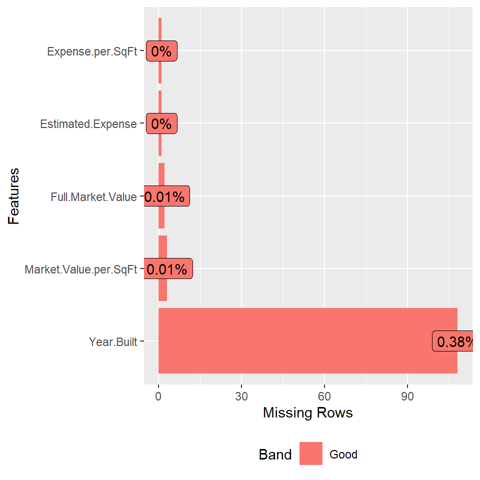
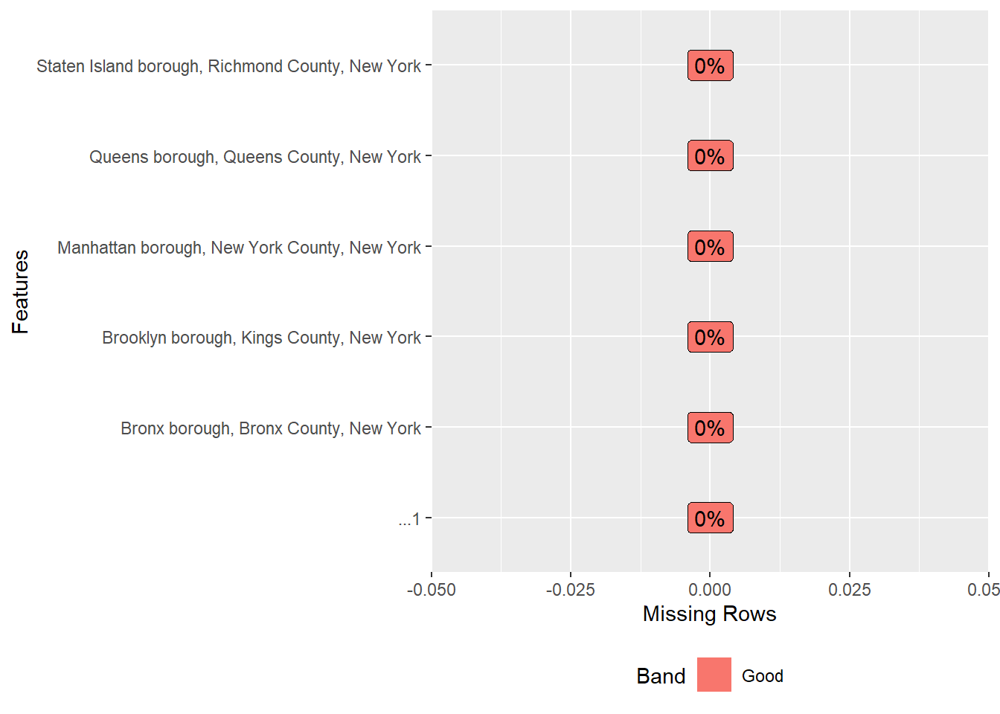

Chapter 3 Data
3.1 Sources
After refining our project target, we mainly use the following two data sources.
3.1.1 DOF Condominium Comparable Rental Income in NYC
This dataset is used by DOF(The Department of Finance) to value condominiums, which contains basic information of condominiums for rent in New York, including geographic location information (coded by borough ID and priority ID) and house properties. Collected by The Department of Finance (DOF) through the investigation of apartment information, it is highly reliable and basically error free; Because it includes detailed address and house information, this dataset is very convenient for us to analyze the geographical distribution of rental prices. The dataset contains 61 columns, but we only use a few of these. The used columns’ infomation:
Boro-Block-Lot: Text variable. The Borough-Block-Lot location of the subject condominium. The lot identifies the condominium billing lot generally associated with the condominium management organization.
Building Classification: Text variable(we transform it later). The Building Class code is used to describe a property’s use. This report includes the two character code as well as the description of the building class.
Total Units: Number variable. Total number of units in the building
Year Built: Text variable. The year the building was built
Estimated Gross Income: Number variable. Estimated Income per SquareFoot * Gross SquareFoot
Gross Income per SqFt:
Number variable. Estimated income per squarefoot of median comparable
Full Market Value
Number variable. Current year’s total market value of the land and building
3.1.2 Housing:United States Census Bureau
This data source contains different housing information in New York State provided by the United States Census Bureau(USCB). USCB is a principal agency of the U.S. Federal Statistical System and is in charge of gathering information on the population and economy of the country. We filter the tables by geography and find the topics we are interested in. The dataset can be downloaded as csv or excel file which can be easily imported by R. All the tables from this source is not tidy, and the data type is character although it actually provides numerical information. We will transform it later.
3.1.2.1 Gross Rent
This table contains 1-Year Estimates of the rent of the occupied housing units in five boroughs in New York City.
Size: 27 rows by 12 columns
Columns: Estimates and Margin of Error for five boroughs
Row names: The range of rent(e.g. ‘$700 to $749’)
3.1.2.2 Median Gross Rent
url:https://data.census.gov/table?q=B2506&g=0400000US36$8600000&tid=ACSDT5Y2021.B25064
The first table contains 5-Year Estimates of the median gross rent of the occupied housing units in five boroughs in New York City in different years.
Size:6 rows by 12 columns
Columns: Estimates and Margin of Error for five boroughs
Row names: Year
The second table contains 1-Year Estimates of the median gross rent of the occupied housing units filter by the ZIP code in New York City.
Size: 1 row by 3652 columns
Columns: Estimates and Margin of Error for different ZIP codes
3.1.2.3 Vacancy Status
This table contains 1-Year Estimates of the number of vacant housing units in five boroughs in New York City.
Size: 8 rows by 12 columns
Columns: Estimates and Margin of Error for five boroughs
Row names: Vacant status(e.g. ‘Rented, not occupied’)
3.1.2.4 Median Gross Rent by Year Householder Moved into Unit
This table contains 1-Year Estimates of the median gross rent by year that householder moved into Unit in five boroughs in New York City.
Size: 7 rows by 12 columns
Columns: Estimates and Margin of Error for five boroughs
Row names: Year householder moved in(e.g. ‘Moved in 2019 or later’)
3.2 Cleaning / transformation
As both the datasets are collected by government offices and well organized, ther are tidy and so we didn’t perform cleaning methods on them.
3.2.1 DOF Condominium Comparable Rental Income in NYC
We transform some columns(such as Building Classification and Boro-block-lot) to easier identified formats for specific visualization tasks. The code is attached in the Results part.
3.2.2 Housing:United States Census Bureau
The transformation of the data from USCB mainly concentrates on two parts: tidying data and type conversion. The problem of the data sets is the geographical labels are listed in the columns. We will use the function ‘pivot_longer’ to deal with it. And we will use the function ‘gsub’ to clean the data and change the character to numerical data type.
3.3 Missing value analysis
3.3.1 DOF Condominium Comparable Rental Income in NYC
## Year.Built Market.Value.per.SqFt
## 108 3
## Full.Market.Value Estimated.Expense
## 2 1
## Expense.per.SqFt Boro.Block.Lot
## 1 0
## Condo.Section Address
## 0 0
## Neighborhood Building.Classification
## 0 0
## Total.Units Gross.SqFt
## 0 0
## Estimated.Gross.Income Gross.Income.per.SqFt
## 0 0
## Net.Operating.Income county
## 0 0
## house_type
## 0According to the counts of missing values in each column, we can see that the majority of NAs are about when the building was built. As there are too many variables, we focus our analysis only on those with at least one missing value.

## county cnt.na n percent
## 1 bronx 1 1042 0.0009596929
## 2 kings 97 9314 0.0104144299
## 3 new york 2 12784 0.0001564456
## 4 queens 2 5022 0.0003982477
## 5 richmond 6 345 0.0173913043As there are more than 20,000 rows of data, most of the rows are complete cases. Among the variables we care about, Year.Built is the only one that has several missing values. Thus, we perform analysis on the missing pattern between this variable and the county the building belongs to. We find that Richmond County (Staten Island Borough) has the largest percentage of missing values and also the least number of buildings in our analysis.
3.3.2 Housing:United States Census Bureau

According to the counts of missing values for each table, none of them has missing values in any column. Take the table about the median gross rent by year householder moved into unit for example, we can draw a missing data plot. Because the type of variables from USCB is character, we may need further analysis to see if there are missing values.